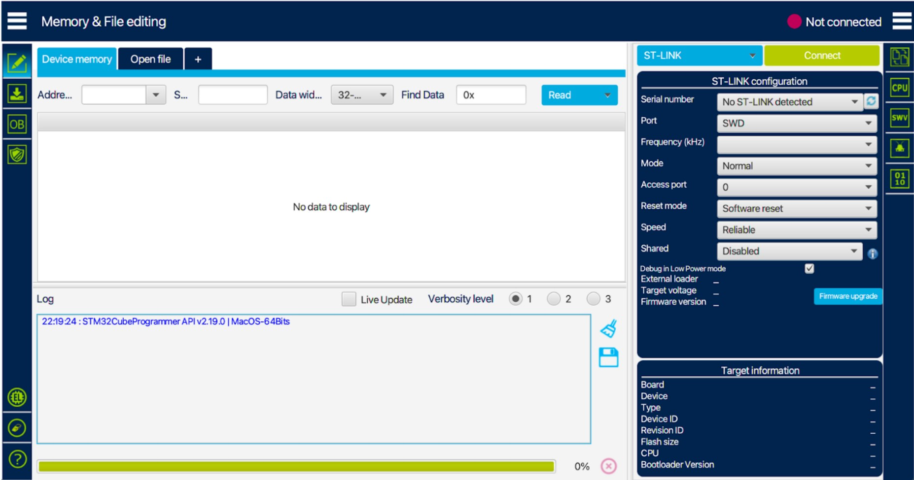
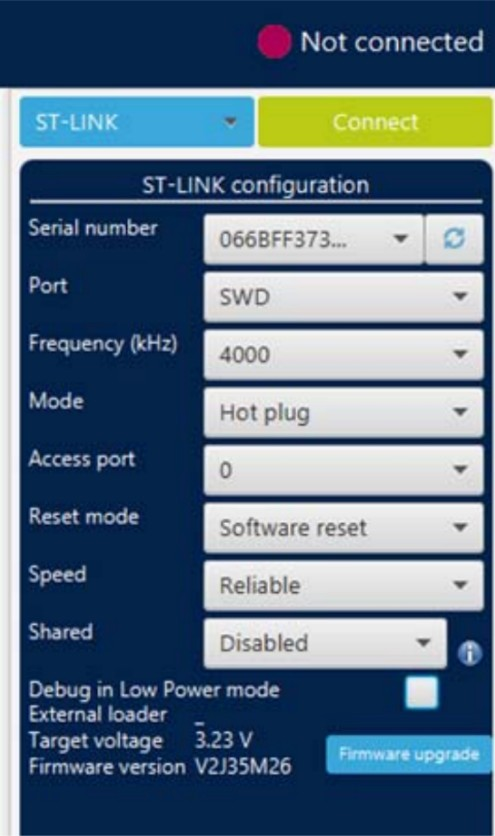
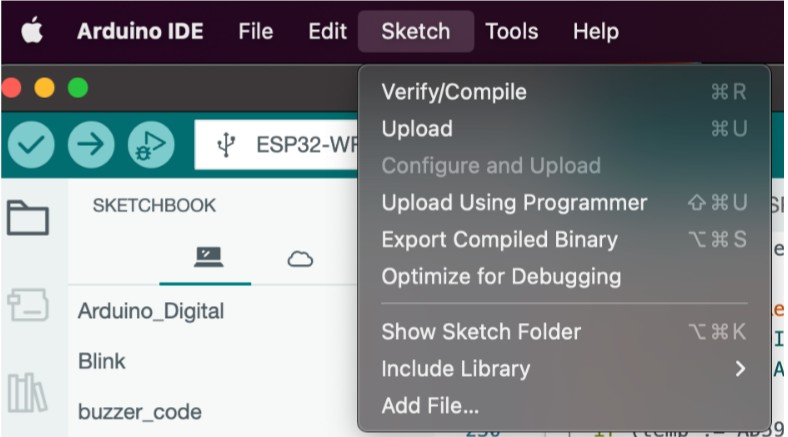
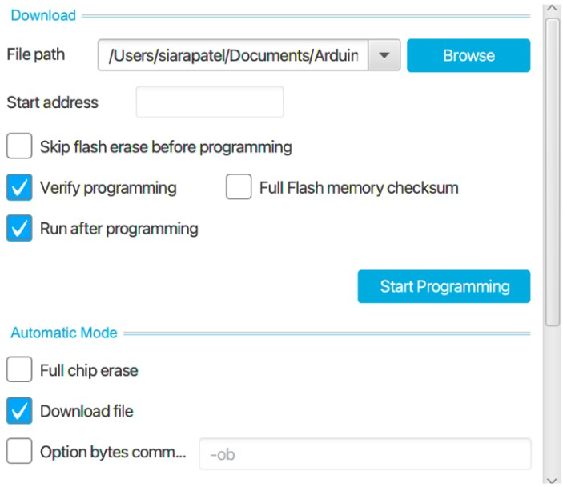

BioMADE Electrochemical Bioreactor Monitoring Guide
Protocol STM32Programmer_Guide
Software:
- Install Arduino IDE if you haven’t already
- Install STM32CubeProgrammer
- This should show up as a folder called “STMicroelectronics.” → Move this to your application folder for easy access
- The path inside this folder should be as follows: STMicroelectronics → STMCube → STM32CubeProgrammer → here, the actual application will reside
- Install STM32CubeIDE (most likely won’t need, but download anyway)
Hardware:
- MCU of use
- Always try to program through Arduino first (ensure that Arduino supports your MCU; if not, use the following method)
- ST LINK (not needed if using Arduino IDE)
- USB/USB-C Cable
Set Up:
- Using jumper wires, make the following connections from the ST Link to the MCU
- SWDIO → PA13 (for the STM32WLE5JC), check the pinout diagram if a different MCU
- SWDCLK → CLK
- VDD → 3V3 or 5V → STM32WLE5JC uses 3V3, check data sheet if something different
- GND → GND
- Reset → Reset
- Once the connections to the MCU are established, open the STM32CubeProgrammer Application. You should see the following:

- On the right side, under the ST-Link Configuration, click the refresh button to the right of the serial number drop-down
- Your ST Link serial number should appear, and fill in the other information. The image below shows what it should look like:

- Now to connect
- Either hit the reset button or ground the reset pin
- Hold the reset, then hit the green “Connect” button
- Then release the reset
- YOU SHOULD BE CONNECTED NOW
- Once connected, go to the left sidebar to “OB”
- Here, expand the Read Protection tab and change the read protection to AA. This removes it.
- Then hit “Apply”
Navigate to this symbol for “Erasing and Programming”
- Now open Arduino IDE with your desired program
- Go to Sketch → “Export Compiled Binary”

- Go back to the STM32CubeProgrammer
- Under the drop-down down navigate to the path with your Arduino IDE files and the specific sketch, and select the corresponding hex file

- Select the same programming configurations as in the image above, then select Start Programming
Debugging/ Helpful Good Links:
RAKWireless Board: